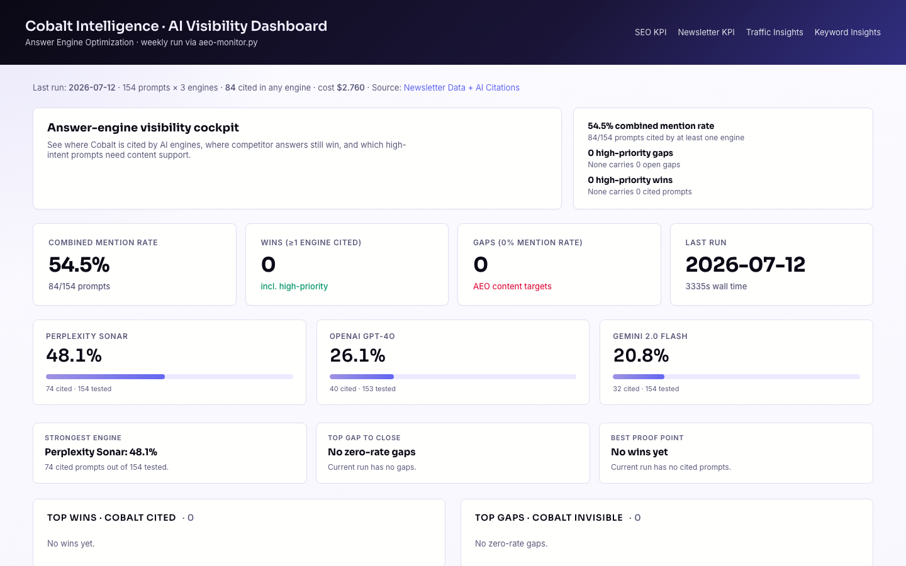
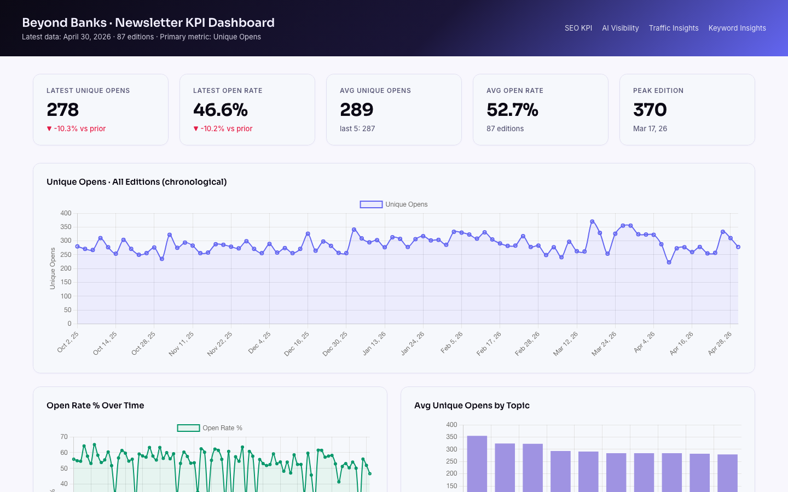
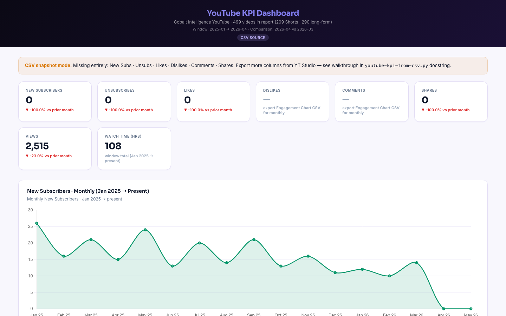

Big infrastructure week: Close API now wired to the trial dashboard, security hardened to OWASP-grade encryption, and the Searchable subscription canceled in favor of a self-hosted AEO monitor (~$1.4K/yr saved). Working Planet onboarded. Broker Fair prep underway with Patricia. Idea Financial case study refresh in flight.
Completed this week
Infrastructure & Security Done
- Close API connected to the trial dashboard. Live revenue, churn, and lead-stage data now flowing from Close CRM into the Sales Data Analytics Dashboard. No more manual report exports.
- Trial Dashboard security upgrade. Password rotated from
cobalt123to a 24-char random string. Crypto upgraded to AES-256-GCM with PBKDF2-SHA256 at 600k iterations (OWASP 2023+ minimum). Cloudflare Access offered as the structural fix when Jordan has 30 minutes. - 1Password vault setup. New trial dashboard password shared via 1Password for Jordan's vault as "Cobalt Trial Dashboard staging." Same flow used for the Working Planet sales data dashboard share.
- Searchable subscription canceled. Self-hosted AEO monitor (Mon 7:10 AM cron) now running daily LLM citation checks across 154 prompts. Net savings ~$1.4K/yr after API costs. Baseline 47.4% combined mention rate captured.
Working Planet onboarding Done
- CRM walkthrough doc shipped. Close.io Lead Statuses, Lead Sources, How statuses change, Customer Identifiers across the funnel. Sent to the WP partner team Apr 30.
- Sales Data Analytics Dashboard access provisioned. Revenue + churn by account, with lead-attribution to creating account. 1Password share included.
- Clarifications sent. Webflow is for blogs only, not the main site. Working Planet team now self-serving lead and revenue data.
Source: #workingplanet-cobalt Apr 30
Website & marketing Done
- PR submitted (current cycle complete, future PR scoped with Jordan for the next round).
- SEO monitoring active. AEO baseline captured across 154 prompts, dashboard live at aeo-dashboard. Refresh runs Monday mornings.
In progress
Broker Fair event preparation In progress
- Pre-event outreach plan drafted for 10 to 20 named contacts at past Broker Fair sponsor companies. Three touches via Cobalt LinkedIn Business page (Patricia signs off on copy + her name as sender).
- 50-State SoS Data Quality Report in production. Lead with a chapter as the value drop in outreach. Shela owns the report.
- Existing customer thank-you gifts: fountain pen with engraved name + 6-page bound brief carrying our 50-State SoS Data Quality Report + business cards + FAQ sheet. Bitty (huge name + existing customer) flagged for special meet-and-greet via Dan's monthly cadence.
- Cobalt merch options being narrowed with Patricia: small pouch bag, stainless steel tumbler, umbrella, travel pillow, or selfie stick / phone stand. Choosing on production speed + Patricia's carrying capacity.
- Awaiting attendee list from Broker Fair organizers (likely a few days before event).
Source: DM with Patricia Apr 29
Case studies In progress
- Idea Financial case study refresh. Prior case study used Joe Salvatore's interview, but he is no longer with them. Refresh is timely.
- Questionnaire drafted with answer-aid options: volume range (was 5K-10K loan apps/month two years ago), how they would describe Cobalt's role today (3 framing options), underwriter time freed (5 ranges + write-in), time-to-fund changes since 2024.
- Open question: who will fill out the questionnaire, and whether it should be anonymized like the Persona case study.
Source: DM with Patricia Apr 30
Content & website In progress
- Cobalt CLI blog post. Shela drafting and placing in the resources section.
- Website refinements + CTA changes. Document reviewed with Jordan via call Apr 29. Working Planet alignment also covered.
Standing dashboards
SEO KPI · year-to-date
Live dashboard · Ahrefs DR + GA4 weekly + monthly

- YTD volume: DR 37, 26.9K users, 28.5K sessions, 29.7K page views, 31 created accounts.
- Down vs prior period: Users -38%, Sessions -35%, Page Views -36%, Created Accounts -28%. Booked Calls flat at 3.
- Read: Charts show dropoff concentrated post Feb 2026 peak. Data table confirms slow recovery in last 4 weeks. AEO and Newsletter dashboards below explain part of it.
Traffic Insights · last 7 days
Live dashboard · GA4 weekly + monthly

- 768 sessions, 7 days. Homepage 335, /blog 218, /post 72. AI search clicks: 8 (ChatGPT + Perplexity + others).
- What's working: Funnel pages convert (/dashboard, /login, /create-account all bounce below 10%). AI Search has the lowest bounce rate of any channel.
- What to fix: /directory* bounces near 98% (likely bot or broken). Homepage at 75% is warm Direct visitors leaving. Blog Direct at 91% is likely bots, not real readers.
AI Visibility (AEO) · 154 prompts
Live dashboard · Replaced Searchable, $1.4K/yr saved

- 47.4% combined mention rate across 154 prompts, 9 engines. Last run Apr 26.
- 8 wins: Cobalt cited in best-of state-API lists, US-side-of-state-API queries, US-state-API for business verification.
- 12 gaps: Top zero-mention prompts (P300, P301, P302) drive ~6.2K combined LLM sessions but get 0% AI citation. Closing them is the next 50-state Business Entity Status pillar page.
Beyond Banks Newsletter
Live dashboard · 87 editions, latest Apr 30

- Latest: 278 unique opens, 46.6% open rate. Avg across 87 editions: 289 opens, 52.7% open rate. Peak: 370 opens (Mar 17).
- Latest below average: -10.3% on opens and -10.2% on open rate vs prior edition. Trend chart shows soft April overall.
- This week: 3 editions shipped (Apr 25, Apr 28, Apr 30). Open data for the latest 2 will mature next week.
YouTube · 501 videos in window
Live dashboard · 211 Shorts + 290 long-form, Jan 2025 to Mar 2026

- Mar 2026 month: 14 new subs (+40% vs Feb), 4.9K views (-8.1%), 839 watch hours, 27 likes (-48.1%).
- Subscriber growth accelerating while unsubscribes are down 31.6%. Net subscriber motion is the right direction.
- Engagement softening: Likes -48% and shares -73% month over month. Worth checking whether the 10 new Shorts shipped this week move that line in May data.